EE 401: DSSS Final Project
This script aims at generating an information signal from intelligent data and transfer the data using DSSS and recreating the data and comparing the original signal to the final signal. Developers Note:
There was not enough time to create a DSB-LC AM signal that was optimized for digital I/O transmission with minimal data loss. It is not in any calculations or figures.
clear all; close all; clc; format short % Create DSSS signal run DSSS_signal_generation; filt_order = round(length(mod_sig)/3-1); % Bandlimit the signal Wn = [50,700]*2/fs; filter = fir1(filt_order,Wn,'bandpass'); figure('Color',[1 1 1]); freqz(filter); xlim([0 fs/2]); blmod_sig = filtfilt(filter,1,mod_sig); [X f] = ComputeSpectrum(blmod_sig,fs,2^16); figure('Color',[1 1 1]); subplot(2,1,1); plot(t,blmod_sig,'r'); title('Bandlimited Signal'); ylim([0 2]); subplot(2,1,2); plot(f,X,'b'); title('Bandlimited Signal'); % Modulate the signal fc = 1000; % 1 MHz [tc Tp] = create_signal(fc,fs,len); A = abs(max(encode)); carrier = cos(2*pi*tc/Tp); carrier = carrier(1:length(encode)); A = abs(max(encode)); dsblc_mod_sig = (mod_sig + A).*carrier; % Create Comparision DSB-LC AM signal dsblc = (encode + A).*carrier; [X f] = ComputeSpectrum(dsblc_mod_sig,fs,2^16); figure('Color',[1 1 1]); plot(f,X); title('DSB-LC Modulate Signal Spectrum'); xlabel('Frequency (Hz)'); ylabel('|X(f)|'); ylim([0 500]); saveas(gcf,'./images/mod_sig','png'); output = SYNCH_DEMOD(t,dsblc_mod_sig,blmod_sig,carrier,fs,700,50,1000,filt_order); % Receive the signal and analyze it for errors info_sig = Despread(t,output,prbn,encode,bitres,true); % message = binaryVectorToASCII(info_sig); % Generate DSB-LC AM signal for comparision run AWGN; run Jamming
The standard error was 1110 bits or 14.9515 percent AWGN_DSSS with Noise at 1 The standard error was 1522 bits or 20.5011 percent AWGN_DSSS with Noise at 2 The standard error was 2099 bits or 28.2732 percent AWGN_DSSS with Noise at 3 The standard error was 2556 bits or 34.4289 percent AWGN_DSSS with Noise at 4 The standard error was 2856 bits or 38.4698 percent AWGN_DSSS with Noise at 5 The standard error was 3027 bits or 40.7732 percent The standard error was 1381 bits or 18.6018 percent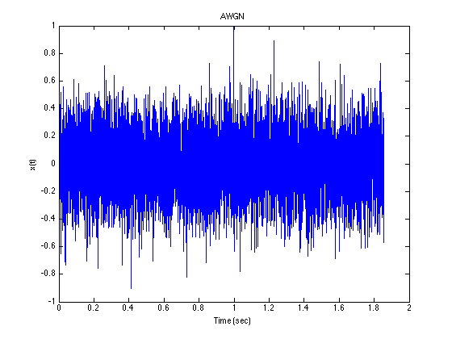 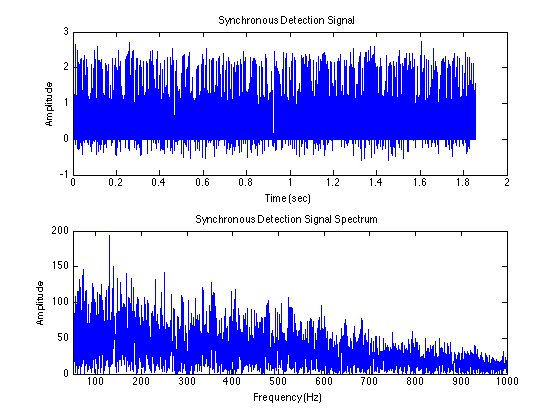 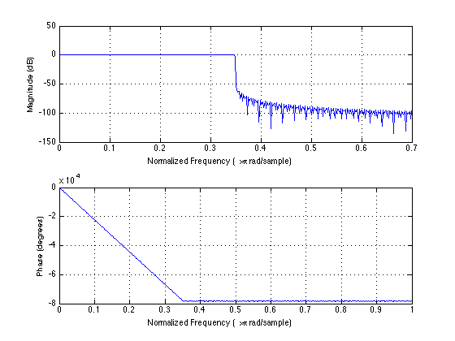 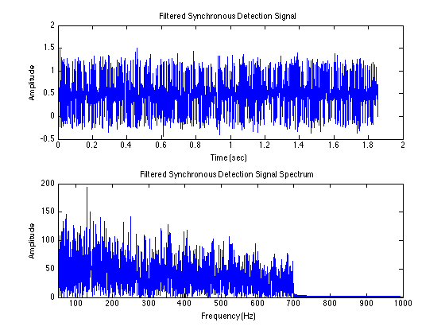 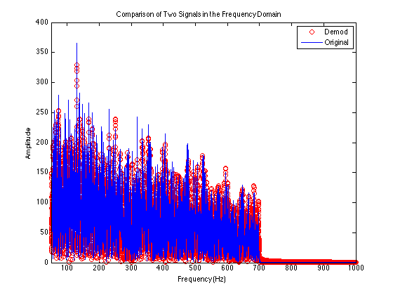 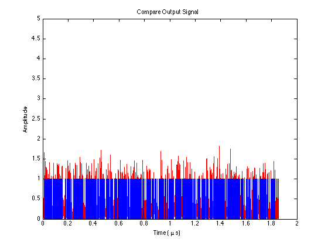 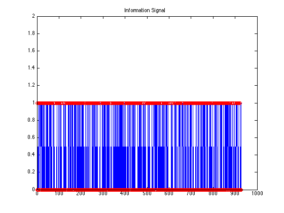 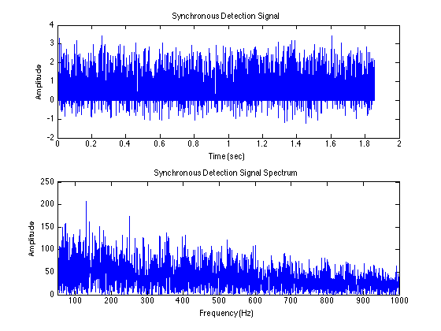 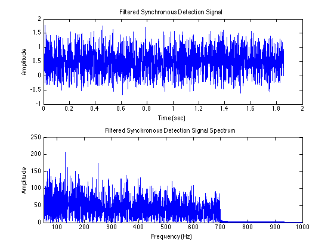 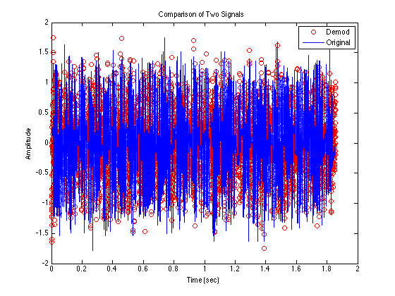 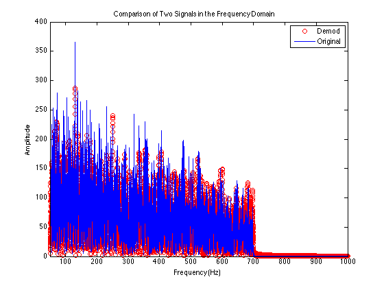 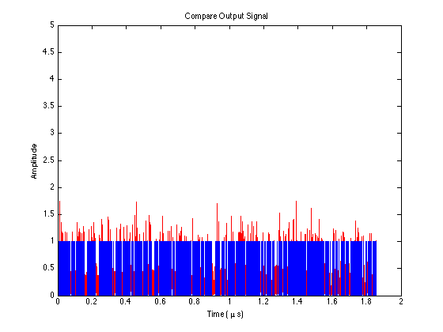 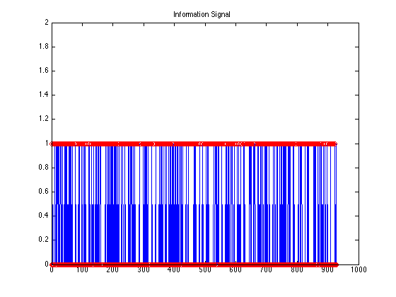 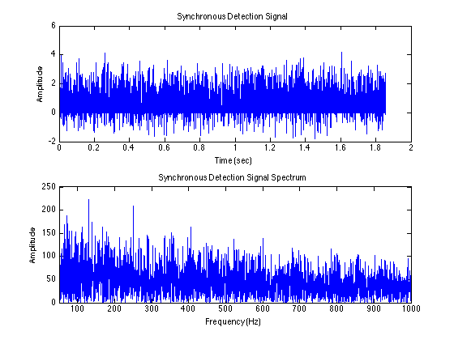 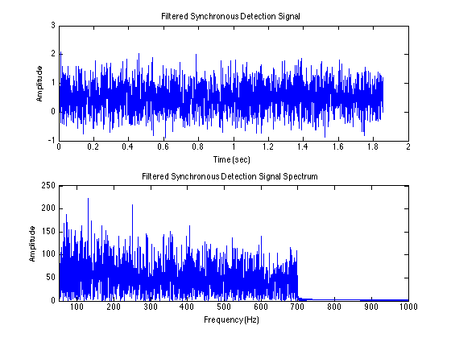 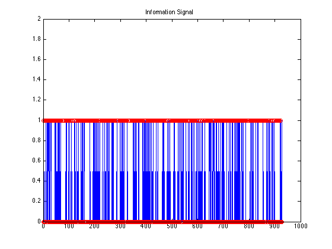 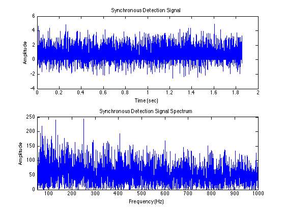 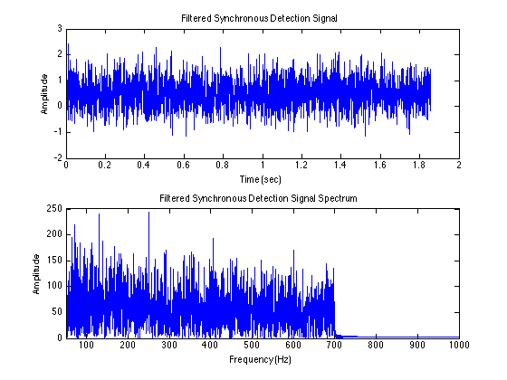 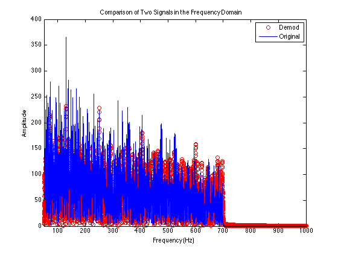 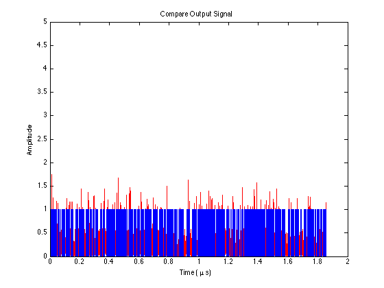 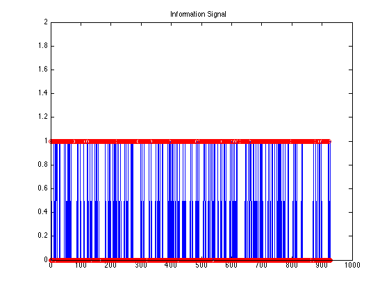 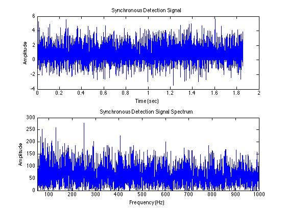 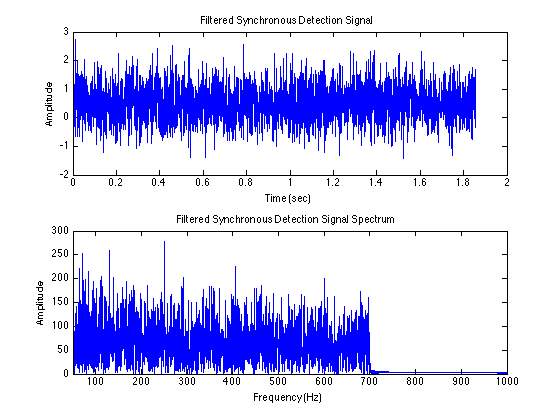 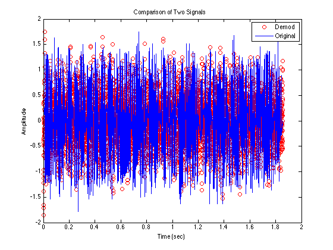 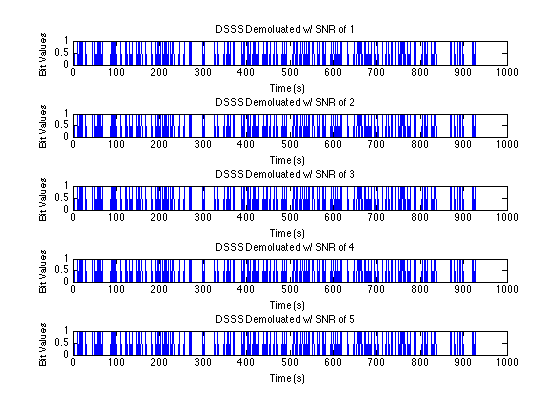 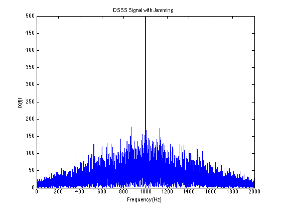 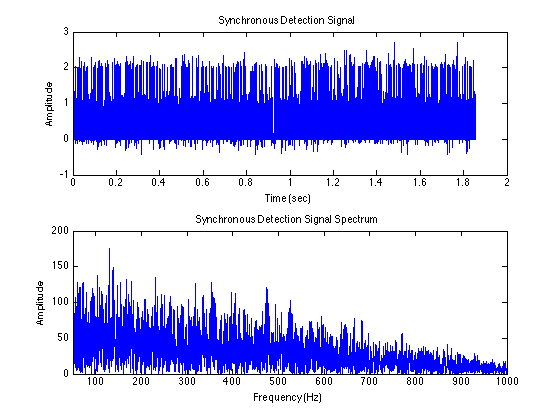 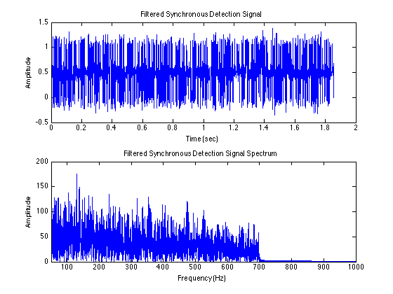 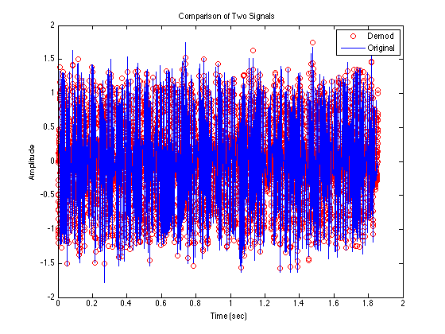 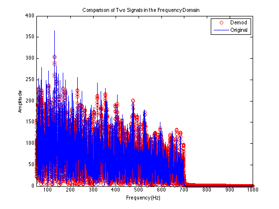 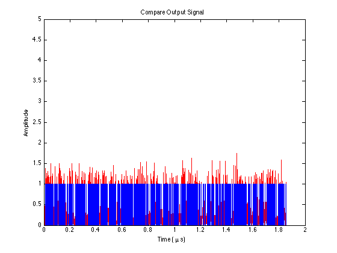 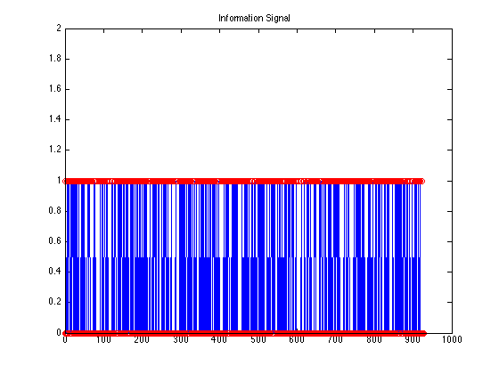